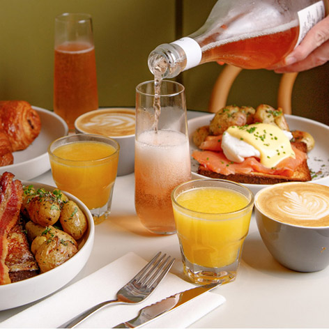

Alumna: Mora Gekdissman
Profesor: Wenceslao Zavala
Materia: Materiales y Procesos I
La página contiene, anuncios, comentarios y noticias sobre la cafetería.
Presentación visual atractiva y sencilla
Diseño y colores inspiradas en el logo de Togni’s café
Historia de Tognis café y su filosofía
Posibilidad de ordenar en línea
Ideas iniciales / boceto de la página web, realizado al comienzo de la cursada. El formato cambió con el paso de las clases.
Ideas iniciales / boceto de la página web, realizado al comienzo de la cursada. El formato cambió con el paso de las clases.